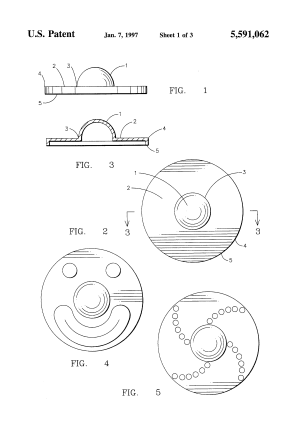

El artefacto, conformado por tres puntas circulares
que rotan sobre un eje central que se sostiene con los dedos de la mano, está cumpliendo
absolutamente con su objetivo original: apaciguar.
Aunque el boom de los juguetes giratorios sucedió a principios de año, es un invento que data de la
década de los 90. Catherine Hettinger, la creadora del modelo del spinner (aunque no se asume su
“autoría” para todos los miles de modelos y versiones que han surgido en los últimos años), dijo en una
entrevista para The Guardian que a principios de 1990, la asechó una enfermedad llamada miastenia
gravis, un desorden que provoca un debilitamiento de los músculos.
Eso le impidió cuidar debidamente a su hija Sara, que ahora tiene 30 años. Catherine cuenta que no
podía cargar sus juguetes o entretenerla mucho, así que empezó a diseñar un objeto que la
entretuviera, que le ayudara a distraerla. Finalmente, tras varios rediseños, se creó una versión plástica
del objeto: uno que ella pudiera girar al mismo tiempo que su hija. Sin cesar.
Aunque la creación estaba destinada exclusivamente a cumplir un fin, su popularidad entre la gente
cercana logró que Catherine comenzara a venderlo en ferias artesanales de Florida, Estados Unidos.
Pero nada se compara con las ventas que hoy tiene el artilugio, considerado como el juguete más
vendido del año. Y es cierto, nos sale al encuentro en todas sus presentaciones, en todas sus formas, en
todos los colores posibles, con luces o sin ellas, en todas las esquinas, en el metro,etc.
